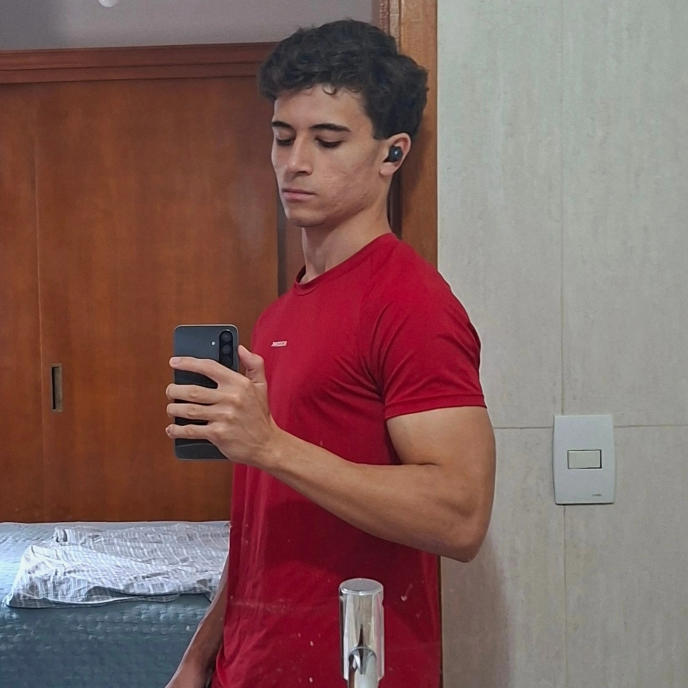

Detecção de risco
Identifica padrões de ansiedade combinando batimentos cardíacos e movimentos do braço.
Um relógio que percebe os sinais do seu corpo, identifica momentos de ansiedade e aparece no momento certo — para interromper o impulso de apostar antes que ele aconteça.
Protótipo funcional · Escola Estadual Bento Quirino · 2026
O vício em apostas costuma se manifestar em picos de ansiedade e inquietação, acompanhados de um impulso repentino de apostar. Nesses segundos decisivos, muitas pessoas estão sozinhas — sem ninguém para ajudar ali, naquele momento.
A vontade de apostar surge de forma súbita, muitas vezes ligada à ansiedade e ao estresse do momento.
O impulso costuma vir à noite ou em momentos de isolamento, quando não há ninguém para interromper a ação.
Coração acelerado, mãos suadas, agitação — o corpo avisa, mas naquele instante é difícil perceber.
O BeFree lê os sinais físicos do seu corpo e intervém com acolhimento quando o risco de ceder ao impulso é maior. Veja como ele age em tempo real:
O MPU6050 acompanha o movimento do braço enquanto a leitura cardíaca detecta a aceleração dos batimentos.
Combina frequência cardíaca e alterações de movimento em um "nível de risco" em tempo real.
Se o risco supera o limite, entra o "modo de ajuda" e exibe mensagens como "Respire fundo" e "Isso vai passar".
Funcionalidades pensadas para acolher no presente e proteger para o futuro.
Identifica padrões de ansiedade combinando batimentos cardíacos e movimentos do braço.
Evita que exercícios físicos sejam confundidos com ansiedade, desativando o alerta durante o treino.
"Respire fundo", "Isso vai passar", "Você está seguro" — trocadas a cada 4 segundos no modo de ajuda.
Enviará, no futuro, um alerta para contatos de confiança cadastrados por você. (Em desenvolvimento)
Componentes simples e confiáveis, trabalhando juntos para cuidar de você.
Unidade central de processamento — o "cérebro" que lê todos os sinais do dispositivo.
Acompanha os movimentos do braço para detectar agitação e inquietação.
Mostra os BPM, o nível de risco e as mensagens de apoio na hora certa.
Sensor de batimentos para acompanhar a frequência cardíaca. Em desenvolvimento para a versão física.
Modo Esporte, Pedido de Ajuda e Consulta de Informações — controle total no pulso.
Um algoritmo combina batimentos e movimento em um nível de risco com limite de alerta.
Humor em tempo real, direto do pulso
Frequência cardíaca (BPM) · limite de alerta destacado
Para garantir que o BeFree respondesse a necessidades verdadeiras, entrevistamos 3 participantes de um grupo de apoio a pessoas com vício em apostas. Os resultados:
relataram aceleração dos batimentos cardíacos antes de apostar
notaram alterações na respiração (curta, rápida ou presa)
sentiram mãos frias, suadas ou trêmulas e agitação repetitiva
disseram que ver alguém importante ajudaria muito a interromper o impulso
concordaram que uma interrupção externa reduz o impulso de apostar
preferiram vibração + alerta sonoro para voltar a atenção ao presente
Um projeto escolar que nasceu para fazer a diferença na vida real.
O BeFree é um sistema em formato de smartwatch que analisa sinais relacionados à movimentação e à frequência cardíaca, apresentando mensagens de apoio em possíveis momentos de ansiedade ou agitação — auxiliando no controle do impulso de apostar.
Desenvolvimento & Autores
Desenvolvimento & Autores

Desenvolvimento & Autores
Escola Estadual Bento Quirino — Turma 2DS · Campinas, 2026
Status atual: protótipo funcional simulado na plataforma Wokwi
Deixe seu contato para conversarmos sobre o projeto, parcerias e o futuro dessa tecnologia. Estamos só começando.